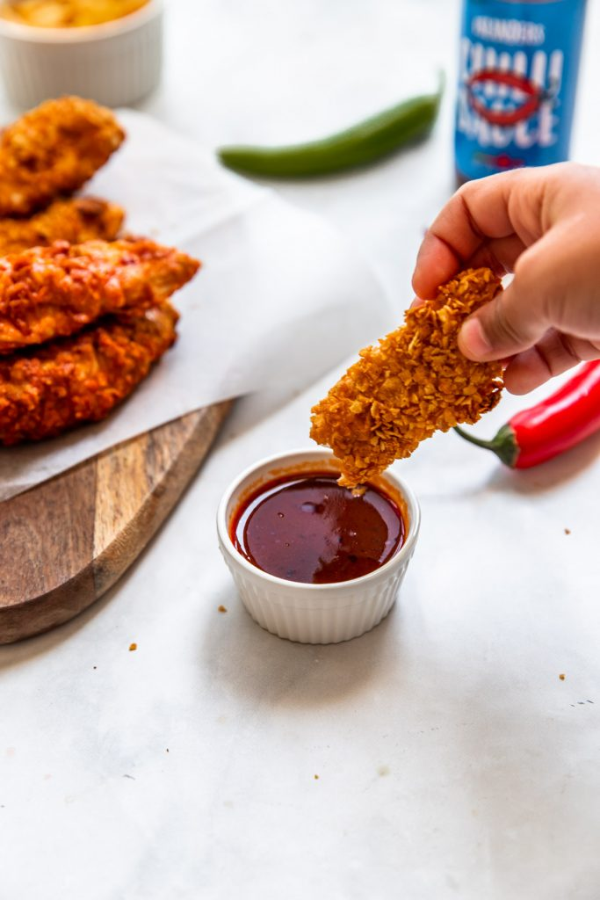

Buffalo Chicken Tenders

Buffalo Chikcen Tenders
These are the perfect crispy chicken fingers, crispy, golden and delicious. Air fryer buffalo chicken tenders are so simple to make, and such a crowd pleaser. Kids and adults alike will love these. They freeze really well and can also be oven baked!
Ingredient List
- 4 chicken breasts or tenders cut into strips about 1 lb, 400-450 g
- 2.5 cups cornflakes 70g
- 1/2 tsp salt
- 1/4 tsp black pepper
- 1/2 tsp garlic powder
- 1/4 tsp paprika
- 1/2 cup flour, whole wheat or regular 60g
- 1 egg
- 2 tbsp buttermilk or milk
- 1 tbsp buffalo or chili sauce
- 1/2 cup buffalo or chili sauce
Steps
- Preheat air fryer to 390F (200C).
- In a food processor add the corn flakes, salt, pepper, garlic powder and paprika. Pulse until cereal is broken down into rough crumbs. Pour into a large bowl.
- Place flour in a separate plate, and in a third bowl whisk together egg, milk or buttermilk and tbsp of buffalo or chili sauce.
- Coat each chicken strip in flour, shaking off extra flour. Dip the chicken in the egg mixture evenly on both sides, then roll in corn flake mix generously. Place on baking sheet and repeat with all the chicken.
- Place in air fryer basket and fry for 5 minutes, then toss around and fry for another 5 minutes until cooked through.
- Once cooked, place the 1/2 cup chili sauce in a shallow bowl, add each chicken strip to the bowl and toss to coat. Enjoy immediately!